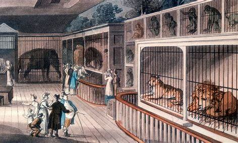
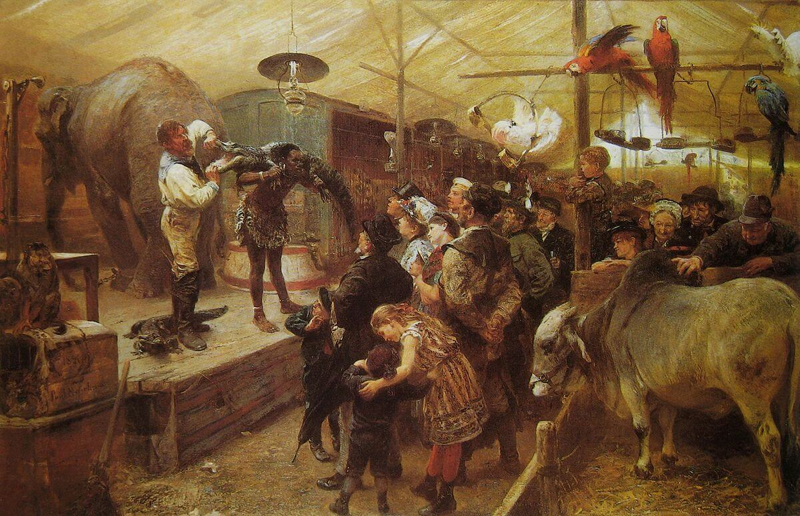

chapter6.3--handout
Background Information
Menagerie (动物展览)
“Well, he certainly must have strained himself to get this menagerie together.”（"我说，他一定花了很大的气力才搜罗到这么一大帮牛头马面。"）
menagerie 这个词最早出现在17世纪的法国，主要指家禽的豢养（the management of household or domestic stock）. 后来则用来指供贵族们观赏的展览动物园（aristocratic or royal animal collections）,里面的动物一般是来自异域的品种并且经过了驯养（a collection of captive animals, frequently exotic, kept for display）.

从形式上来说，这种动物展览其实就像现代的动物园。不同的是，这些展览是贵族个人私有的。他们进行展览也仅仅是为了满足好奇心，以及展示自己的财富（exhibition of luxury and curiosity）, 并不是出于进行科学研究或教育的目的（not of scientific and educational interest）.
后来meganerie也开始指在英美国家出现的巡回动物展览（travelling animal collections）, 类似于到处进行演出的马戏团。

这里Tom把Gatsby聚会上的客人们形容为menagerie, 其实有双关的含义：第一层采取了menagerie的引申义，也就是指“一群不同寻常、各色各样的 人”（an unusual and varied group of people）; 第二层意思就是暗讽这些人并没有显赫的社会地位，并且行为举止夸张放浪，让人看来十分滑稽可笑（像展览的动物一样）。
Euphemism (委婉语)
...appalled by its raw vigor that chafed under the old euphemisms...（厌恶它那不安于陈旧的委婉辞令的粗犷活力）。这里的euphemisms是指属于上流社会的那一套老派的“社交礼仪及用语”。
euphemism 原本在英语中属于一种修辞手法，一般指用委婉，文雅的方法表达粗俗或者避讳的话。比如用pass away来表示die（逝世），on the streets表示homeless（无家可归），between jobs表示unemployed（待业中）。
大家还知道哪些英文的委婉语也可以和老师分享哦~
Vocabulary
obliterate
vt. 擦掉；使消失；使被忘却（to completely remove away or destroy）
原文：After she had obliterated four years with that sentence they could decide upon the more practical measures to be taken.
等她用那句话把四年一笔勾销之后，他俩就可以研究决定那些需要采取的更加实际的步骤。
💧obliterate 表示“完全抹去，忘却”（to remove or forget completely）, 比如：Everything that happened that night was obliterated from his memory.
那天夜里发生的一切都从他的记忆中消失了。
elusive
adj. 难以捉摸的（difficult to describe or understand）
原文：...I was reminded of something — an elusive rhythm, a fragment of lost words, that I had heard somewhere a long time ago.
……使我回想起一点什么——我很久以前在什么地方听过的一个迷离恍惚的节奏，几句零落的歌词。
💧elusive 的动词形式elude有“使错过，使找不到”的含义，比如：She took the exam again, but again success eluded her. 她再次参加了考试，可还是没有及格。
💧因此可以联想：一个想法或者实物让某人找不到、抓不住，就是elusive “难以捉摸的，难以辨认的”（hard to isolate or identify）.
Crush Your Problems
- She was appalled by West Egg, / this unprecedented “place” / that Broadway had begotten / upon a Long Island fishing village / — appalled by its raw vigor / that chafed under the old euphemisms / and by the too obtrusive fate / that herded its inhabitants / along a short-cut / from nothing to nothing.
她十分厌恶西卵，这个由百老汇强加在一个长岛渔村上的没有先例的"胜地"——厌恶它那不安于陈旧的委婉辞令的粗犷活力，厌恶那种驱使它的居民沿着一条捷径从零跑到零的过分突兀的命运。
💧句式拆解
①整个句子的主干部分是：She was appalled by West Egg... — appalled by... and by...
②this unprecedented “place” that... 作West Egg的同位语
💧表达精讲
①be appalled by 指“（由于厌恶）感到惊骇万分的”，比如：He was appalled at how dirty the place was. 这个地方那么脏，他很震惊。（后跟by或at皆可）
②this unprecedented “place” “没有先例的‘胜地’”；unprecedented 也就是“前所未有的”（never having happened before）;
这里指West Egg仿佛是突然冒出来的一个没名没姓的地方，表明了Daisy对West Egg所象征的New Money的鄙夷；
③that Broadway had begotten upon a Long Island fishing village “由百老汇强加在一个长岛渔村上的”；beget指“招致，引发”（to cause something or make it happen）.
Broadway百老汇其实是New Culture的一种代表。歌舞杂耍是兴起于1920s的美国的一种娱乐方式（a popular form of entertainment）, 带来了名人文化（celebrity culture）; 由此明星演员也变成一个有利可图的行当，很多人都趋之若鹜。这一新贵（New Money）阶层就聚集在长岛的West Egg.
④its raw vigor that chafed under the old euphemisms “它那不安于陈旧的委婉辞令的粗犷活力”；raw vigor指“粗犷的、没有被驯服的活力”（uncontrolled, not tempered power）, 这是深受各种礼仪教条约束的East Egg所没有的；chafe under指“因……而恼怒”；the old euphemisms “陈旧的委婉辞”，这里指East Egg所遵守的那一套上流社会的“社交礼仪及用语”；
⑤the too obtrusive fate “过分突兀的命运”；obtrusive指noticeable in an unpleasant or annoying way;
这里可以理解为Daisy并不看好这些New Money, 他们只不是通过捷径（short-cut）迅速地成为有钱人，然后进行无节制的挥霍，最后只会重新陷入贫穷（from nothing to nothing）. - When the melody rose, / her voice broke up sweetly, / following it, / in a way contralto voices have, / and each change / tipped out / a little of her warm human magic / upon the air.
当曲调升高的时候，她的嗓音也跟着改变，悠扬婉转，正是女低音的本色，而且每一点变化都在空气中散发出一点她那温暖的人情味很浓的魔力。
💧表达精讲
①break up 指“声音变调”（不能按字面理解为破音哦~）；
②tip out 指“倾倒”（to pour）;
③her warm human magic “她那温暖的人情味很浓的魔力”；再往后读我们会看到对Daisy的声音有不一样的形容（"full of money"）, 和这里的“充满人情味”不同。 - Perhaps some unbelievable guest would arrive, / a person / infinitely rare and to be marvelled at, / some authentically radiant young girl / who with one fresh glance at Gatsby, / one moment of magical encounter, / would blot out / those five years of unwavering devotion.
也许会光临一位令人难以置信的客人，一位世上少有的令人惊异不已的佳人，一位真正艳丽夺目的少女，只要对盖茨比看上一眼，只要一刹那魔术般的相逢，她就可以把五年来坚贞不移的爱情一笔勾销。
💧表达精讲
①a person infinitely rare and to be marvelled at “一位世上少有的令人惊异不已的佳人”；infinitely rare和不定式to be marvelled at一起构成后置定语修饰a person;
②authentically radiant “真正艳丽夺目的”；authentically比really和genuinely都更正式，语气也更重；
③with one fresh glance at “再多看上一眼”，one fresh glance相当于one additional glance.
④blot out “抹去，掩盖”（to make insignificant）, 相当于我们在前面介绍的obliterate;
⑤those five years of unwavering devotion “五年来坚贞不移的爱情”；unwavering表示never changing.
这句话是Nick的调侃：如果Daisy没有及时回心转意，在这样一个充满浪漫、一切皆有可能的派对上，说不定Gatsby就会别的女郎抢走。 - Out of the corner of his eye / Gatsby saw / that the blocks of the sidewalks really formed a ladder / and mounted to a secret place above the trees / — he could climb to it, / if he climbed alone, / and once there / he could suck on the pap of life, / gulp down the incomparable milk of wonder.
盖茨比从他的眼角里看到，一段段的人行道其实构成一架梯子，通向树顶上空一个秘密的地方——他可以攀登上去，如果他独自攀登的话，一登上去他就可以吮吸生命的浆液，大口吞食那无与伦比的神奇的奶汁。
💧表达精讲
①the blocks of the sidewalks, block可以指（一片）街区，也可以指一块块石头，这里理解为后者更合理，也就是“铺成人行道的一块块地砖”；
②suck on the pap of life, “吮吸生命的浆液”；suck on 表示“吮吸”，比如“把棒棒糖放嘴里吮吸”就是suck on a lollipop; pap在这里有两种理解，一种是指“软食，半流质食物”，另一种是指“奶头”（nipple）.
③gulp down 表示“狼吞虎咽，大口吞下”。
这一段话出现在Gatsby的回忆里，五年前他和Daisy一起走在人行道上的时候，他就已经充满幻想：“梯子”在这里象征着Gatsby的野心，也就是实现他想要的生活方式 ——赢得名利和地位。 - He knew / that when he kissed this girl, / and forever wed his unutterable visions to her perishable breath, / his mind would never romp again / like the mind of God.
他知道他一跟这个姑娘亲吻，并把他那些无法形容的憧憬和她短暂的呼吸永远结合在一起，他的心灵就再也不会像上帝的心灵一样自由驰骋了。
💧表达精讲
①forever wed his unutterable visions to her perishable breath,“把他那些无法形容的憧憬和她短暂的呼吸永远结合在一起”；wed...to...表示to unite as if by marriage, “形成一种亲密的联合”；
②his mind would never romp again like the mind of God, “他的心灵就再也不会像上帝的心灵一样自由驰骋了”；romp表示“〔尤指又跑又跳地〕嬉闹”，这里是强调Gatsby的心灵（或是意念）充满了活力（full of vitality）;
“不再像上帝的心灵一样自由驰骋了”可以理解为他的所有隐秘、活跃的想法不再只为他自己所知（the mind of God暗含着“上帝的想法是人不可揣摩的”）。也就是说仿佛只要他亲吻了Daisy, Dasiy就可以知道他的私密的想法（private thoughts）. - At his lips’ touch / she blossomed for him like a flower / and the incarnation was complete.
经他的嘴唇一碰，她就像一朵鲜花一样为他开放，于是这个理想的化身就完成了。
💧表达精讲
the incarnation was complete “这个理想的化身就完成了”；incarnation指“化身”，一般用具象的事物来比喻抽象的事物，比如：She was the incarnation of wisdom. 她是智慧的化身。
这里是指Daisy成为Gatsby所有幻想（vision）的化身。
Content Analysis
除了那位电影导演和女明星引起了Tom和Daisy的兴趣外，他们对于派对的其他客人和整个氛围都十分不满（客人们喝醉后全无形象，除了大声喧闹外，还有把身旁朋友的头摁在泳池里的）。
Daisy直接犀利地说到他们连邀请都没收到就来了（“Lots of people come who haven’t been invited”），而在Tom看来，西卵人不过都是靠做私酒生意发起来的（“A lot of these newly rich people are just big bootleggers, you know.”）
Gatsby知道Daisy玩得并不开心（“She didn’t like it,” he insisted. “She didn’t have a good time.”）但他还没有清醒地意识到（或者选择性忽略了），他们之间的隔阂不只是五年的时间，而是阶级地位的差异，以及性格观念上的鸿沟——
💧Clue1: Daisy is clearly seperated from Gatsby.
Evidence 1: But the rest offended her — and inarguably, because it wasn’t a gesture but an emotion.
但是其他的一切她都讨厌——而且是不容置辩的，因为这并不是一种姿态，而是一种感情。
Daisy对West Egg的厌恶是来自心底的（emotion强调是情感上的，而不只是gesture, 也就是具体的行动表现）。但是在这种轻慢放肆的氛围里，有一种Daisy身上所没有的浪漫气质，这也是Gatsby最显著的特征——"
Evidence 2: After all, in the very casualness of Gatsby’s party there were romantic possibilities totally absent from her world.
话说回来，正是在盖茨比的晚会的随随便便的气氛之中，就有她自己的世界中完全没有的种种浪漫的可能性。
这种浪漫是具有魔力的，仿佛只要怀抱希望一切就可以实现： What was it up there in the song that seemed to be calling her back inside? What would happen now in the dim, incalculable hours? 比如从大门传出来的音乐似乎在呼唤她回到里面去（暗指回到Gatsby痴痴念想的过去），而且仿佛什么可能都会发生（比如Gatsby和Daisy的复合以及Daisy为了Gatsby离开Tom）.
但是这种浪漫真的会为Daisy所接受并感动吗？比如Gatsby坚定地相信过去的可以重来，甚至不是重来，而是回到原原本本的过去——
💧Clue 2: Gatsby is steadfast in the belief that the past can be repeated.
Evidence 1: “Can’t repeat the past?” he cried incredulously. “Why of course you can!” "不能重温旧梦？"他大不以为然地喊道，"哪儿的话，我当然能够！"
Nick提醒Gatsby不要对Dasiy希冀过高：“I wouldn’t ask too much of her,” I ventured.（“如果是我，我不会向她要求那么多”）. 但Gatsby认为他一定能让Daisy重新找到过去的感觉——
Evidence 2: I’m going to fix everything just the way it was before,” he said, nodding determinedly. “She’ll see.”
"我要把一切都安排得跟过去一模一样，"他说，一面坚决地点点头，"她会看到的。"
过去或许可以回顾（to revisit）, 但果真可以重现（to repeat）吗？Nick在这一章中的叙述口吻充满了焦虑和紧张，结尾的怅惘其实也是一个隐喻：But they made no sound, and what I had almost remembered was uncommunicable forever. 几乎快要想起来的旋律和歌词没有把握住，就再也无法表达了。就像一个眼前触手可得的美梦，还差一步没有实现，就永远错过了。
Today's Bonus
💧How Celebrity Culture Gets Us Psychologically Hooked 我们是怎么被名人文化吸引的
我们在前面提到，百老汇歌舞剧的兴起带来了最早的一波名人文化（Celebrity Culture）. 那么我们为什么会受这样的文化吸引呢？比如吸引我们去追星、聊八卦的背后心理成因是什么？今天的彩蛋我们就来看一看心理学上的解释。
- We Like The World To Have A Narrative
我们的大脑需要在周围的世界里找到各种故事模式，乃至把某些作为我们的效仿典范（比如Gatsby这样的rags-to-riches “麻雀变凤凰”的成功励志故事就会吸引很多人）。
而关注名人的生活和动向，恰好满足了这一需求。有研究发现，人们在公众场合的谈论中，有80%到90%都是关于八卦的。
Being aware of the goings-on in the lives of people more famous than us fills our brains' need to see patterns in the world, to make familiar storylines out of chaos. And it is a need. Some studies found that upwards of 80 to 90 percent of all conversations in public are gossip. - It Helps Us Move Up In Society
第二个原因其实和我们祖先的领导方式有关。在史前社会中，如果你想要合群并且占据领导高位，就要掌握部落里的各种大小动态（其实就是各种八卦消息 ）。要是一旦有情况发生，你就需要运用这些信息马上调度解决。
In prehistoric societies, knowing who was a jerk, who was sleeping with whom, and lots of other juicy details were all important things to stay on top of if you wanted to fit into your small tribe. As situations changed in your village, it was vital to know about them as soon as possible and be able to adjust to them if necessary.
但即便进化到今天，我们的大脑也并没有完全高级到可以区分熟人八卦和明星八卦两者的重要性差别。简单来说 ，掌握办公室里的一些人事八卦或许可以帮助你升职，但知道明星的私生活细节对你其实是完全没有用的。
These days, our brains haven't advanced enough to the point where they can tell the difference in importance between gossip about people we know and celebrities. - Schadenfreude Is Real
Schadenfreude 是一个德文词，指“幸灾乐祸”（pleasure derived from the misfortunes of others）. 感到幸灾乐祸一般有三种情况：
①情况对你有利（It benefits you.）
②对方咎由自取（It seems like the person deserved it.）
③你很嫉妒对方（It happens to someone you envy.）
所以很多时候我们看到名人的丑闻也会产生这种心理——guilty pleasure. 比如2014年Justin Bieber因为非法赛车和醉驾被捕，当时推特上每分钟就有6100的消息量（24小时后达到了428万）。
Anecdotal evidence supports celebrity schadenfreude as our guilty pleasure as well. For example, in 2014, when Justin Bieber was arrested for drag racing while drunk and without a license, it generated a then-record 6,100 tweets per minute — 4.28 million in 24 hours. - The Halo Effect Makes Us Think They Are Perfect
更多的时候 ，我们对名人们还会有崇拜的情结。因为我们的大脑会本能地认为，如果一个人在某一方面很出众，那么这个人在很大概率上各方面都是优秀的。
基于这种思维方式，名人的代言广告才有这么大的影响力。一个人的名气越大，越会产生更高的信赖值。
And this is why celebrity advertisements are so effective. We are more likely to trust them and their opinions than we are some random guy, since we know they are good at something